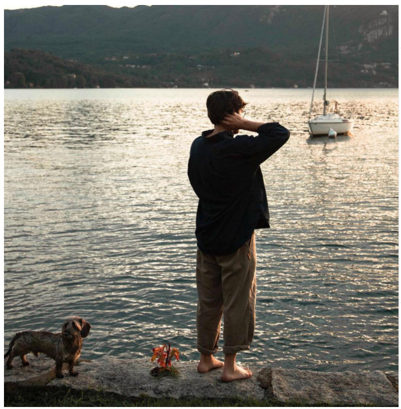

Friends and guests frequently asked me if it is possible to swim in Lake Orta. To reply to this simply question I would like to tell you the story of the lake and the way it has evolved.
Lake Orta used to be an emblematic case of industrial pollution by heavy metals and other chemical products produced by steel factories. The consequence was low pH values which created a toxic environment for life.
As many know, pH level is crucial for flora and fauna to ensure basic life conditions.
My grandpa remembers that in that period it was barely possible to see fish and other animals and the water was really murky. He is an engineer and with other chemists, they dedicated themselves to make a plan to recover this tragic situation. They studied the possibility of pouring an enormous quantity of bicarbonate, similar to baking soda, to help pH level to increase to a healthy value, suitable for life. Technically this process is called liming. The solution was similar to helping a person to digest with bio carbonate. The result at the lake was close to a big BURP.
The liming process started at the beginning of the 90's, gradually bringing back the pH to balanced values, determining the precipitation of the metals and the recovery of normal chemical conditions. The entire process took approximately 10 years and nowadays Lake Orta's water is super clear and water's life has reborn.
Today it is possible to admire fish, turtles, birds and all the unique lake wildlife.

The lake has been our playground since I was a child, and this was the place where I had my first sailing experience and where we were able to learn how to swim. Lake Orta is located in northern Italy, at the bottom of the Alps, and as the lake was an ancient glacier cave it's very deep and steep below the waterline. The deepest point is between San Giulio's Island and the beautiful village of Pella, and it measures 469ft (143mt). This aspect is the only thing you have to worry concerning swim in Orta Lake, in particular if you travel with kids.
So, after years of industrial pollution, thanks to a bunch of chemists and engineers Lake Orta is one the cleanest italian lakes, and it is waiting for you to have a bath in a non salty water.